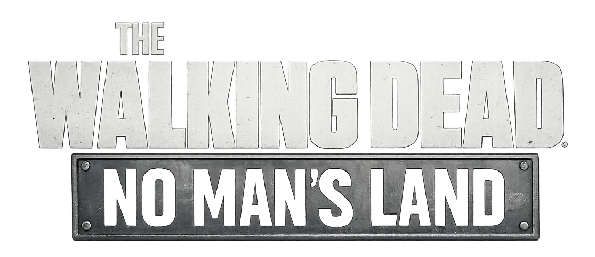

The Walking Dead : No man's land
Retour aux Aventures terminées
La Guilde tente de survivre dans un monde ravagé par les morts-vivants, où chaque ressource et chaque survivant peuvent faire la différence.
📜 Informations de l'expédition
Origine : Aventure principale 🏆
Statut : Accomplie 🏆
📅 Début : Juin 2026
🎮 Type : Survie / Stratégie / Gestion
👥 Participants : MK
📖 Histoire de l'aventure
Le monde s’est effondré et les morts se sont relevés. Dans les ruines d’une civilisation disparue, les survivants doivent désormais lutter pour leur vie face aux rôdeurs et aux dangers d’un monde sans règles.
Aux côtés de personnages emblématiques de la série, la Guilde devra constituer son groupe de survivants, explorer les zones abandonnées à la recherche de ressources et renforcer son camp pour assurer la survie de tous.
Au fil de l’aventure, les rencontres avec les survivants et les événements inspirés de la série The Walking Dead mèneront la Guilde toujours plus loin dans ce monde devenu sans loi
🎯 Objectifs de l'expédition
- 🧟 Survivre aux hordes
- 👥 Recruter et renforcer notre groupe
- 🏕️ Développer notre camp
🎬 Souvenirs de l'expédition
Retrouvez les chroniques de cette aventure.